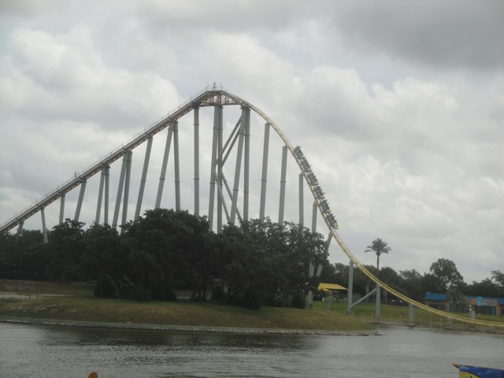

| |
Steel Eel Review

Today at Incrediblecoasters, we're going to be reviewing Steel Eel, the oddball of the Morgan Hypers. Well, it's technically not a hyper coaster since it's under 200 ft. But you know what? F*ck it! I don't care! Let's get in the cars, pull down the lap bar, and we're on our way! We head down a small dip out of the station, around a turn and begin climbing up the lifthill. We get a nice view of some random streets in San Antonio as well as the lagoon in the center of Sea World San Antonio. And yeah. It may not be a proper hyper coaster, but we're still up a decent height. We then crest the top of the lifthill, and then we drop on down. This first drop not only gives us quite a bit of speed, but it also helps give us a little bit of airtime in the back. Ooh. I'm really liking this so far. We then rise up a big hill. We have plenty of speed, even at the top, and we get some nice floater air while we're at it. Wee. We then head down a small drop that doesn't reach the ground, where we get this sort of float air/ejector air combo where it starts out as floater air, but then you get yanked into your seat, and I just really love that. We then head up a small hill, heading back up where we were before, getting another nice little pop of floater air. And then we just drop down to the ground, gaining some more nice speed, and of course, getting a nice pop of ejector air on the way down. WEE!!! =) We then rise up a fairly big hill, and sadly, there's no airtime at the top. Instead, we just have a midcourse brake. Kind of a bummer that we're already slowing down at this point. But hey. I've had a lot of fun so far, and there's still plenty more fun to go around. So brace yourself as we head down the spiral drop to the ground. WEE!!! We then head up this curved hill. Sadly, there's not much airtime at the top of this thing, but just look. A whole slew of bunny hops. We've got some airtime coming our way. We drop on down, go through a slight turn, and now...AIRTIME!!! Bunny Hop #1, nice floater air. Bunny Hop #2, nice floater air. Bunny Hop #3, nice floater air. We then rise up this small hill with no airtime, but we then go around a banked S Curve that while it doesn't provide a crazy amount of laterals, is just a lot of fun. And sadly, this leads us straight into the brake run. So that's Steel Eel, a really fun ride and definetly the black sheep of the Morgan Hypers. I mean, it's technically not even a hyper coaster, it's a little on the short side, and there's definetly room for improvement. But at the same time, the ride does have GREAT pacing. And the airtime on this ride, while not out of this world, is fairly strong. It's definetly a better ride than the standard American Morgan Trio. Definetly give it a ride when you're at Sea World San Antonio. Not only is it a really fun ride, but it's one of the star attractions at Sea World San Antonio. It deserves some love.
8/10
Location: Sea World San Antonio
Opened: 1999
Built by: Morgan
Last Ridden: July 16, 2013
Steel Eel Photos




Home
|